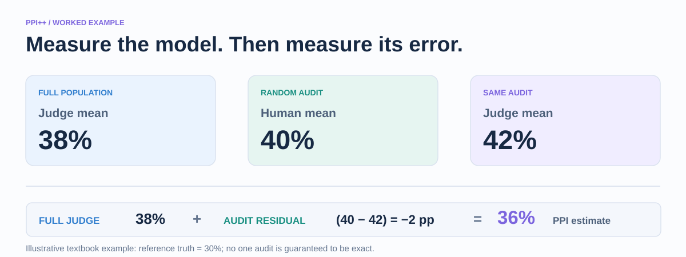

1. The core trap: high agreement does not guarantee unbiased estimates
Evaluation teams often validate an LLM judge by checking pairwise agreement against human experts (for instance, in MT-Bench MetaAudit recorded 84.3% DeepSeek–expert agreement and 80.6% GPT-4o-mini–expert agreement against an 82.3% expert–expert baseline). Yet strong pairwise agreement can coexist with severe population bias when errors concentrate in specific slices:
- Underestimation of true defect rates: On HelpSteer2, GPT-4o-mini alone estimated a 9.2% defect rate versus the 17.5% human-consensus rate—missing nearly half of all defects.
- Length-sliced blind spots: After multiple-testing analysis, GPT-4o-mini missed 86% of long defective responses compared with 41% of short defective responses.
- Self-evaluation blind spots: On 21,288 generated math answers, GPT-4o-mini caught only 17% of its own errors, yielding a negligible 1.06× label-saving multiplier.
2. Prediction-Powered Inference (PPI++): estimator & label-saving mechanics
Suppose we want to estimate a population mean θ = E[Y] (such as true dataset defect rate) using N unlabeled examples scored by an LLM judge f(Xᵢ) and a small randomly sampled human-audited subset of size n with reference labels Yⱼ. The PPI++ estimator (Angelopoulos, Duchi & Zrnic, 2023) combines the large judge sample with an unbiased residual correction weighted by power-tuning parameter λ ∈ [0, 1]:
θ̂_PPI++(λ) = (1 / n) Σ_{j=1}^n Y_j + λ · [ (1 / N) Σ_{i=1}^N f(X_i) − (1 / n) Σ_{j=1}^n f(X_j) ]
Because the audited subset is drawn randomly, E[f(X_j)] = E[f(X_i)], so the bracketed term has expectation zero for any judge—even a biased or prompt-injected judge. Choosing λ from the empirical covariance between Y and f(X) minimizes variance: when the judge correlates strongly with human truth, confidence intervals shrink dramatically; when correlation is weak, λ → 0 and the estimator safely reverts to unbiased human-only estimation.

3. Empirical label savings: subjective vs. verifiable tasks
In MetaAudit's empirical tests across n ≥ 100 audited samples, PPI++ confidence intervals achieved 0.89–0.91 empirical coverage against a 0.90 nominal target—while revealing a sharp contrast between subjective and verifiable domains:
| Evaluation Regime (MetaAudit v2/v3) | Effective Label Multiplier | Interpretation |
|---|---|---|
| Subjective helpfulness (DeepSeek thinking off vs. on) | 1.27× vs. 1.29× | Extra test-time reasoning barely improves subjective judge–human correlation |
| Two-judge HelpSteer2 audit vs. human-only | 786 vs. 957 labels (−18%) | Modest but genuine savings with statistical validity |
| Verifiable math (DeepSeek thinking off vs. on) | 1.90× vs. 3.80× | Reasoning substantially strengthens judge accuracy when truth is verifiable |
Verifiable math four-judge cross-fitted ensemble (n = 800) | 4.7× | Distinct verifiable condition; not transferable to subjective tasks |
| Self-audit (GPT-4o-mini grading its own math, 21,288 items) | 1.06× | Self-judging yields almost no statistical benefit here |
4. One-sided dataset certification & Edgeworth skewness correction
When a release gate asks "Can we ship this dataset if the true defect rate is below threshold τ?", normal approximations break down for rare defects and modest audit sizes because the residual distribution is skewed. In MetaAudit's certification tests under a 10% false-accept target:
- The initial normal approximation (v2) violated calibration at 12.2% false accepts.
- Adding an Edgeworth skewness correction (v3) restored observed false accepts to 9.2% (below the 10% target) while improving power on genuinely good datasets from 0.80 (human-only) to 0.86.

5. Negative results worth knowing before deploying
- Active sampling hurt efficiency (0.82×): Adaptive selection performed worse than simple random sampling in the tested regime.
- Anytime-valid sequential testing saved zero labels: It preserved statistical validity but offered no sample-size savings in the reported test.
- Pairing with cost-aware routing: While PPI++ minimizes human auditing cost, sequential two-LLM routing (Cost-Aware Routing of LLM Judges) minimizes model inference & latency cost by escalating only ambiguous items to stronger verifiers.
6. Authoritative references
- Preet Baxi, MetaAudit: Auditing LLM-as-a-Judge Reliability with Human-Grounded Statistical Inference →
- Angelopoulos et al. (2023), Prediction-Powered Inference, Science 382(6671) ↗
- Angelopoulos, Duchi & Zrnic (2023), PPI++: Efficient Prediction-Powered Inference (arXiv:2311.01453) ↗
- Zheng et al. (2023), Judging LLM-as-a-Judge with MT-Bench and Chatbot Arena (arXiv:2306.05685) ↗
- Wang et al. (2024), HelpSteer2: Open-Source Dataset for Training Top-Performing Reward Models (arXiv:2406.08673) ↗